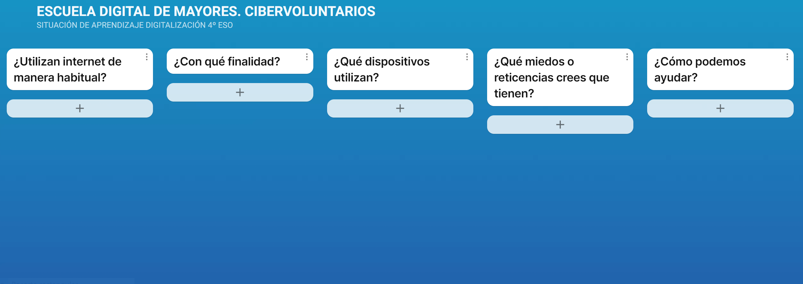

¿Todas las personas tienen acceso a internet?
La situación de aprendizaje comienza con una actividad que presenta una iniciativa ciudadana, mediática o institucional sobre las repercusiones y el papel de las personas mayores en el proceso de digitalización en el que, como sociedad, estamos inmersos. En este caso, se propone presentar mediante dos vídeos la iniciativa ciudadana «Somos mayores, no idiotas» y la iniciativa mediática «Levanta la cabeza por una digitalización sostenible y universal» (anexo 1).
A partir del visionado de estos vídeos, el/la docente plantea una serie de preguntas para conocer las ideas previas y la percepción del alumnado sobre la problemática social vinculada con el uso de los medios digitales por parte de las personas mayores y la brecha digital generacional (anexo 2). Para esta dinámica de puesta en común se utilizará un mural virtual interactivo, en el que el alumnado, a través de notas a modo de pósit, compartirá sus ideas con el objetivo de crear espacios de aprendizaje compartidos que motiven al resto del alumnado a participar e involucrarse en la situación de aprendizaje planteada.

Tras esta puesta en común, se plantea al alumnado el reto de poner en marcha una «Escuela Digital de Mayores» en el centro educativo mediante el desarrollo de talleres temáticos. El objetivo es reducir la brecha digital entre las personas mayores de su entorno.